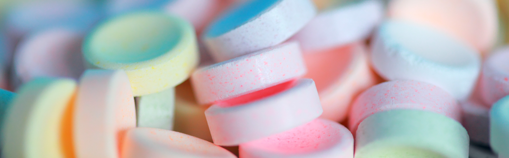
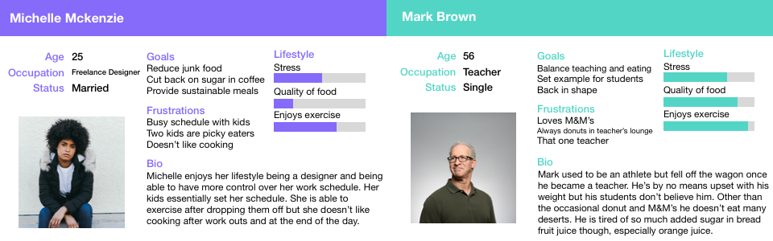
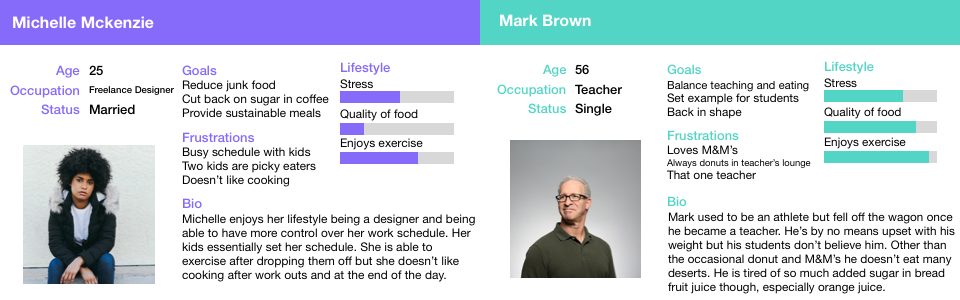

Sugar Counter
Tracking sugar for weight loss

Go To App
About
As people aim to be more health conscious, one of the biggest offenders has been added sugar. Added sugar can be prevalent anywhere; from breads, to juice, to cereals, and, in some extraordinary cases, salt packets.
Users
The target demographic was individuals about 37 years old. The individuals motivations for weight loss was either to have better health overall or more specifically better fitness. The age is not incredibly high however simplicity was stressed in the interface of the app. A way was provided to add foods, check progress, and a step counter was included.
 

Wire
I wanted to keep the app as simple as possible. The only function it serves is to track how much sugar a person consumed in a day so I didn't want much clutter. Along with tracking sugar, the app tracks a users steps and their weight. Deciding to include weight took some thought. While I, personally, do not believe a person's weight is the end all be all, weight loss was one of the primary reasons users used a food log.
Colors
A lot of health and fitness apps included either an orange or green as the primary color. A muted green was chosen as it does a better job at representing food and nature. A lighter blue was chosen as a secondary color. It is often associated with health care as well. Orange was chosen as a third color to add some warmth to the app.
HiFi
Normally, I am not a huge fan of a lot of white on a page. I think whitespace is important but a flat white just seems off, or it feels empty. However, with this app being for medical reasons I felt like white was a necessity. I wanted users to feel comfortable using the app. Helvetica Neue is the only font used. I do try to stay away from it but I wanted as simple of an app as possible. Less distractions and more user friendly interface.
 Invision
Invision